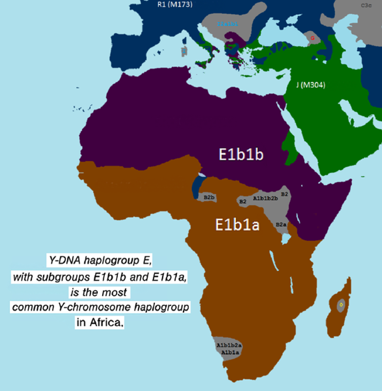

Who is amen
The Egyptian spirtual system and story was about a kingdom of light and darkness, chaos and order and their symbolism reflected this. The eurocentric perspective and rewriting of his-story has mystified the Egyptian beliefs and distorted the afrocentric truth that can be found in the scriptures of the Abrahamic religions. The kingdom of Kush
- Etymologies, more words conncected in meaning with origins in Egypt.
Other connected etymologies can be found in the heiroglyph Table of Contents
Etymologies
temple of amun karnak
maseru,mizraim
amen section
Jesus, Isis, Isos, Zeus, Asase Ya
Israel, Osiris, Ezra
Horus, Heroes, Hours, Horizon, helios , halo , holy,
Ptah, Peter, Father
Montu, Hebrew, Abiru
Geb, Gabriel
Maat, Mathematics
Mut, Mother
Apep, Papal, Babylon, Bible
Set, Sunset, Satan
Mery, Mary
Egypt,ChiPtah, Jupiter
Ankh, thank, nkosi
Tut, Tata, Ntate Dad
Aten, den, garden, hedon
Iah, Jah, Ya
deshret, desert, maseru, mizraim, redland
Kemet, hamath, black land
Atum, Adam,
Thoth, Thought
10. Religion is a construct, true christianity is from Egypt
It is important to understand that the beliefs of the
Egyptians have been distorted often purposefully and often
due to bias and so when they can not understand their
symbolism they will simplify it by describing it as a “deity”
and they will say there were all these different “Cults” in
Egypt, this is the same tactic used during the expansion of
Islam and Christianity into Africa.
The different so called “deities” are often the different ways
of describing the creator and their attributes that are in us
and around us. The early christians who were later labelled
as “Heretics” use a similar concept of Aeons, one of the
aeons are called “Horos” corresponding to the Egyptian
depiction of Horus. They want people to view Egypt as a
source of paganism rather than Greco-Rome, so that they
can distort and manipulate the christianity that originated in
Egypt.
For example, the Egyptians represented mathematics with
maat, thought with thoth and atom comes from atum. The
foreign conquerors and subsequent egyptologists will say
these were all different gods they worshipped and that the
Egyptians believed that maat was a daughter of thoth. The Eurocentric lens fails to interpret the symbolism of Egypt thus hiding the cultural appropriation that took place.
We have the temple of Amun in Sudan i.e Amen, this
influences the names of many kushite/nubian leaders in the
form of “Amani”. Unsurprisingly the romans damaged the
temple. These temples were highly valued in the “New
Kingdom of Egypt” and the dominance of Judah in Egypt
and the Egyptians worshiping the true god was written in
Isaiah 19:17-19.
The Elephantine papyri also demonstrates an early jewish
presence in Upper Egypt of jews worshipping in Egyptian
temples who had no knowledge of the written Torah. Most
of the jews in Egypt became the early christians, the gap
between the fall of the northern kingdom of Israel and the
death of Christ has been exaggerated.
Modern historiography will tell you that before Christianity
was adopted (created) by the romans the Osiris “myth” was
the most common belief throughout the Roman empire. It is
also worth noting that when Christianity was adopted by the
romans they created and maintained their own manipulated
version of it and persecuted other early christians who were
closer to the truth.
The Nag Hammadi Library found in upper Egypt
demonstrates the early christian presence and contains
many scriptures that were excluded
The “ancient” Egyptians referred to the creator as Osiris
and Isis, Isis corresponded to the female/motherly/Mut
aspect of the creator. This is why many people still say say
“Yisis”/“Yasis” as a reference to Jesus, because the letter
“J” is a relatively recent addition (deception).
The Osiris “myth” is essentially a story of how Osiris came
to earth and was destined to die due to the corruption of
Seth, scripture will tell you that we are all descendants of
Seth since Noah is descended from Seth. So it is
essentially a story of how god was on earth but due to the
flaws of humanity he was destined to die, this is consistent
with the narrative of Jesus especially the Gospel of Judas
that was excluded by the Vatican. The symbolism the
Egyptians used for Seth was often consistent with their
symbolism for foreigners which makes sense considering
scripture says it was the Roman Empire that killed Jesus.
After the death of Osiris he is reborn as Chonsu, Chonsu is
depicted essentially the same as Osiris except Chonsu has
the Djed pillar in his hand which represents the new
kingdom and has the sun on his head because he is the
source of light, son=sun of god. This is also why Osiris and
Chonsu are depicted with a crook and flail these are
symbols of a shepherd because the Lord is our shepherd.
This Djed is what becomes the early symbol of a cross with
3 lines corresponding to what later becomes described as
the “Holy Trinity” which is arguably the oldest distortion of
Christianity hence why all the different christianities have
differing understandings of it, this is also why they literally
removed the cross from their writing systems because then
they wouldn’t be able to distort the truth of Chi. The temple
of Chonsu is located in the Karnak Temple Complex which
is intelligently designed so that the main corridor and
“shrine” is illuminated perfectly by the rising sun during the
mid-winter solstice in the northern hemisphere, the date of
the mid winter solstice used to be December 25th on the
Roman calendar i.e Christmas. The original holy trinity is
the Theban Triad. Yah/Jah is from Egypt, because he
represents the adult form of Chonsu.
Early Christianity is found in Egypt, you can research the
various “gnostic” sects, prior to the roman Nicene creed
that standardised christianity and you will see what different
groups believed. The Nag Hammadi Library has a lot of
valuable scripture that has a lot of truth found in
Valentinianism and Sethian manuscripts. The people who
wrote these manuscripts did not identify by labels such as
“Valentinian”, “Sethian”, “Gnostic”, these are labels created
to categorise beliefs that were excluded from the
mainstream narrative.
Islamic history says that the Jews believed Osiris was the son of god and the western narrative identifies the earliest Christians as being jews